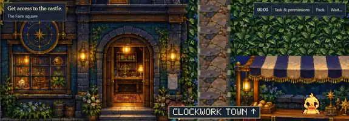

A fair worth getting lost in
The planned setting connects the lab, fairground attractions, town and castle approach. Optional activity should feel like part of a coherent world—not a row of test buttons.
Major project / RLE Castle: The Faire
A fair full of games, rumors, and choices along the way. We're building an adventure people can enjoy—and a research environment in which agents can explore, make decisions, and leave an inspectable record.

A small world outside the lab door. The Faire scene shows the lab entrance, a route toward Clockwork Town and a booth with Puddle.
Desktop and conversation overlays were cropped out. This is a still from development, not proof of movement, finished mechanics or the newest build revision.
The experience we're working toward
The design is not a questionnaire dressed as a game. The fair should have places to walk, attractions worth playing, characters to talk to, and reasons to explore beyond a single gate.
The planned setting connects the lab, fairground attractions, town and castle approach. Optional activity should feel like part of a coherent world—not a row of test buttons.
The footrace is a current development focus. The broader design calls for playable attractions, visible rules and meaningful input, rather than a menu option that simply awards a win.
“Get access to the castle” remains distinct from collecting tickets, following a rumor or winning an attraction. The intended research examines how those goals interact.
October 31 / local playtest report
“I just played the footrace … it actually looks great.”Josh · first-person development feedback, October 31, 2026. Ellipsis omits conversational wording; not an independent review.
That is a useful playtest signal—not a claim that the whole adventure, its agent interface or its evaluation protocol is complete. A verified current-build race capture remains a separate release item.
Proposed research / not reported results
A richer world offers more than one way to get stuck, make progress or misunderstand the task. The design aims to preserve those differences rather than collapse them into a single “good agent” score.
Game performance, task completion and compliance with the declared rules are different measurements.
These are design questions. This preview does not report new model-agent runs or validated conclusions from the current Faire.
Keep the evidence labels literal
The source was a user-shared screenshot of the Faire window, uploaded October 31 at 02:09 UTC. Its capture time and precise build revision are unknown. We removed surrounding desktop/chat material by a rectangular crop, then resized and compressed the crop. No image content was generated or filled in.
The rejected October 18 build and the rejected top-down car-racing screen are not used. A separate footrace visual was not presented as a running-build screenshot because that provenance was not established.
Read the machine-readable provenance · Preview release notes